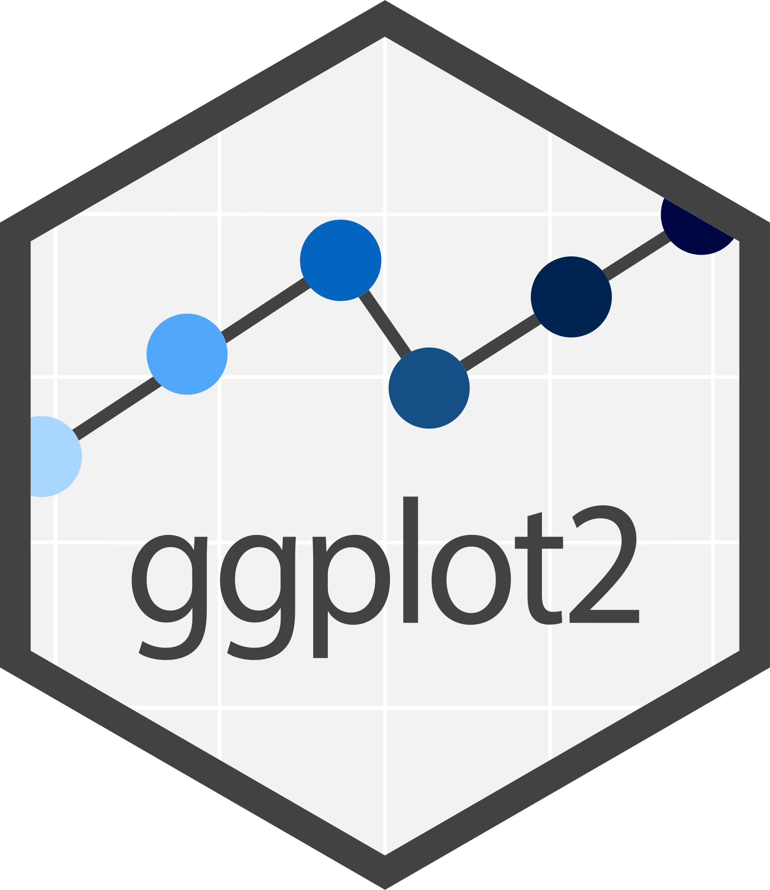

Dahrii Paul
dahriipaul@gmail.com
For the past four years I am working in microarray data analysis, next-generation sequencing data analysis, gene network analysis and the application of machine learning approaches.
Experience
Research Scholar
Currently my research focuses on identifying potential biomarkers in human body fluids for cancer diagnosis utilizing multiomics data with machine learning and network biology approaches.
Trainee
Trainee on IPR Under Biotech Industrial Training Program sponsored by Department of Biotechnology, Government of India in conjunction with Biotech Consortium India Limited .
.M.Tech Project
Worked on "Prediction of small non-coding RNA, NsiR4 target sites in the genome of Synechocystis sp. PCC6803" under Supervisor – Prof. Jogadhenu Syama Sundar Prakash at Department of Biotechnology and Bioinformatics.
Trainee
One-month training at Regional Drugs Testing Laboratory, Directorate General of Health Services, Govt. of India, Guwahati-37, Assam India. (Preliminary knowledge on chemical, instrumental and microbiological analysis of drugs).
Education
Skills
-

-

-

-

-

-

-

-

- 
-

-

-

-

-

-

- Basics in Machine Learning Algorithms
- Statistical Analysis
- Python and R Programming
- Basic in Unix Command
- Next-Generation Sequencing Data Analysis
Research Interests
I am currently focused on cancer biology, using various omics data and employing various data preprocessing, feature selection, statistical method and machine learning methods to identify cancer biomarkers for early diagnosis and targeted therapies. Additionally, I am passionate about understanding evolutionary principles and genetic inheritance in shaping population genetic dynamics and diversity. I am equally intrigued by the complexity of biological systems, the types of data utilized, various approaches to data integration, and the diverse range of biological problems at different levels, including issues related to system heterogeneity in terms of size and timescale.
My future goals involve interdisciplinary research to address complex biological questions, and I look forward to collaborating with fellow experts in understanding of the biological world..
Publications
-
R. Das, V.S.P. Sinnarasan, D. Paul, A. Venkatesan, A Machine Learning Approach to Identify Potential miRNA-Gene Regulatory Network Contributing to the Pathogenesis of SARS-CoV-2 Infection, Biochem.Genet. (2023). doi:10.1007/s10528-023-10458-x.
-
V.S.P. Sinnarasan, D. Paul, R. Das, A. Venkatesan, Gastric Cancer Biomarker Candidates Identified by Machine Learning and Integrative Bioinformatics: Toward Personalized Medicine, Omi. A J. Integr. Biol.27 (2023) 260–272. doi:10.1089/omi.2023.0015.
- A. Venkatesan, A. Barik, D. Paul, M. Muthaiyan, R. Das, Identification of novel lncRNA by reanalysis ofRNA-seq data in Zika Virus Infected hiNPCs, VirusDisease. 33 (2022) 185–193. doi:10.1007/s13337-022-00771-1.
-
D. Paul, V.S.P. Sinnarasan, R. Das, D.R. Ampasala, A. Venkatesan, Chapter 16 - Role of human body fluid biomarkers in liver cancer: A systematic review, in: G.P. Nagaraju, V. Amouda, A.B.T.-C.M. in D.D. and R.for C.T. Dinakara Rao (Eds.), Academic Press, 2023: pp. 293–309. doi:10.1016/B978-0-443-15280-1.00001-7.
-
V.S.P. Sinnarasan, D. Paul, R. Das, D.R. Ampasala, A. Venkatesan, Chapter 17 - Study on biomarkers in endometrial cancer using transcriptome data: A machine learning approach, in: G.P. Nagaraju, V. Amouda,A.B.T.-C.M. in D.D. and R. for C.T. Dinakara Rao (Eds.), Academic Press, 2023: pp. 311–327.doi:10.1016/B978-0-443-15280-1.00019-4.
-
V.S.P. Sinnarasan, D. Paul, M. Muthaiyan, D.R. Ampasala, A. Venkatesan, Chapter 2 - Computational analysis of prognosis-related genes in liver cancer, in: G.P. Nagaraju, R.B.T.-T. and P.M. for the M. of H.C.Vadde Volume 2 (Eds.), Academic Press, 2022: pp. 7–19. doi:10.1016/B978-0-323-98807-0.00016-8.
- V.S.P. Sinnarasan, D. Paul, L.D. Naorem, M. Muthaiyan, D.R. Ampasala, A. Venkatesan, Identification ofPotential Key Genes Involved in Progression of Gastric Cancer Using Bioinformatics Analysis BT - Novel therapeutic approaches for gastrointestinal malignancies, in: G.P. Nagaraju, S. Peela (Eds.), SpringerSingapore, Singapore, 2020: pp. 101–114. doi:10.1007/978-981-15-5471-1_7.
Conferences & Workshops
- Workshop on Establishing and Sustaining Cloud Infrastructure for Informatics-based Healthcare IIIT-Delhi, India, 22-23, March 2024
- Poster presentation: “Prediction of Blood-Secretory Human Proteins Using Machine Learning Approach”, International Conference on“Bioinformatics in Health and Food Security” organized by Department of Bioinformatics, Pondicherry University; February 14-16, 2024
- Meeting on Modelling and Tackling Complex Biological Systems. The Institute of Mathematical Sciences Chennai, India 13-14 October 2023
- Workshop on Discovery to Validation a Roadmap to Biomarker Discovery in Proteomics: Part 2. Omics to Health Analytics IIT-Bombay Student Chapter, Mumbai India, 28 September & 2 October 2023
- Workshop on No-Code Machine Learning. IIS University Jaipur, India, 21-28 August 2023
- A Four Days weekend workshop on Artificial Intelligence for Biologist. Apratima Biosolutions Bengaluru, India August 5-6, 19-20 & 26-27 2023
- One-Day Hands-on Workshop on Omics Data-Analysis. Omics to Health Analytics IIT-Bombay Student Chapter, Mumbai India, 15 August 2023
- Workshop on Statistics for Machine Learning with R (SMLR). IIIT-Allahabad, India, 03-06 July 2023
- Two Days Workshop on Next Generation Sequencing. Pondicherry University Puducherry, India, 02-03 March 2023
- Poster presentation: “Identification of potential prognostic-related genes from liver cancer transcriptome profiles using bioinformatics approaches” on International Conference cum Workshop on“Plant Molecular Biology and Bioinformatics” organized jointly by Department of Bioinformatics, Indian Science Congress Association(ISCA), Pondicherry Chapter, & Society for Plant Research; February 13-15, 2023
- Workshop on Statistical Modelling With R (SMWR). IIIT-Allahabad, India, 9-15, January 2023
- National Conference Cum Workshop on Machine Learning In Biological And Medical Sciences. Pondicherry University Puducherry, India, October 27-28, 2022
- DST-SERB Sponsored High-End Workshop on Next Generation Sequence Data Analysis in Human Diseases (SERB Accelerate Vigyan - Karyashala). Mizoram University, India, 17-22 October 2022
- Three Days National Seminar Cum Workshop On RNAseq - From Library Establishment to Data Analysis. Pondicherry University Puducherry, India, February 16-18, 2022
- Workshop on Fairness in Machine Learning (GIAN). IIT Palakkad, India, January 24-04 February 2022
- Workshop on Advances in Machine & Deep Learning (GIAN). NIT Warangal, India, 12-16 January 2022
- The National Seminar cum workshop on Crystallography and Biomolecules. Pondicherry University Puducherry, India, 08 December 2021
- International Conference cum Workshop on Translational Sciences in Drug Discovery and Development. Pondicherry University Puducherry, India, August 25-27, 2021
- Workshop on Big Data Analytics & Cloud Computing.Pondicherry University Puducherry, India, March 25-27, 2021
- International Virtual Conference on Drug Discovery & Translational Research. Pondicherry University Puducherry, India, 25 26 February 2021
- Workshop on Big Data Analytics for Business Administration. Pondicherry University Puducherry, India, 06-07 August 2020
- Two days National Seminar on Next Generation Sequencing - NGS: Myth or Miracle. Pondicherry University Puducherry, India, 12-13 December 2019
- National Workshop on Macromolecular Crystallography. Pondicherry University Puducherry, India, 18 December 2019
- A Hands-on Introduction to Next Generation Sequencing and Metagenomics Analysis (GIAN). IIT Bombay, India, 02-06 December 2019
- International workshop on Data Science. University of Hyderabad, India, 19-22 December 2017
- BioQuest 2017 Conference. University of Hyderabad, India, 12-13 October 2017
- AS-UoH Frontiers in Life Sciences International Conference. University of Hyderabad, India, 15-16 September 2016
- Workshop on Innovation and Entrepreneurship. University of Hyderabad, India, 06-07 September 2016